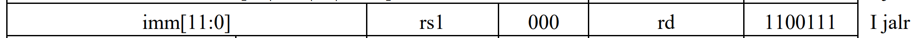

RISC-V 指令
本文最后更新于：2023年11月1日 下午
- 参考
- 《计算机组成与设计 第五版》
- 《RISC-V-Reader-Chinese-v2p1》（包云岗老师）
- 《手把手教你设计CPU RISC-V处理器》
- https://blog.csdn.net/qq_38915354/article/details/115696721
- https://zhuanlan.zhihu.com/p/374235855
- https://blog.csdn.net/weixin_46623752/article/details/125770550
- https://blog.csdn.net/sucaiwa/article/details/129328891
1. 寄存器相关
- RISC-V 架构可选32bit（RV32）/64bit(RV64)，可选32个寄存器（I架构）/16个寄存器（E架构）。
- 考虑整数通用寄存器组：其中0寄存器被预留为常数0，其余31/15个寄存器为通用整数寄存器。
- 考虑浮点寄存器组（一般为F/D类扩展指令集），有32个通用浮点寄存器；寄存器位宽由扩展指令集类型决定，F类：单精度、32bit，D类：双精度、64bit。
- RISC-V 的汇编语言是对寄存器的数据进行处理。
- 算术运算（加、减、立即数加）。
- 数据传输（取：从存储器取数据到寄存器；存：从寄存器读数据存到存储器，更多关于存储器访问指令下面有介绍）。
- 逻辑运算（与，或，异或…）。
- 移位操作（逻辑左/右移，算数左/右移）。
- 条件分支（相等、不等、大于、小于跳转）。
- 无条件跳转（跳转 - 链接）。
- 存储器访问指令
- 对于更复杂的数据结构（例如数组和结构体）包含比寄存器更多的数据元素，只能存放于存储器中，使用数据传输指令进行读取。
- 与RISC架构策略一致，只有Load和Store指令可以访问存储器，其它指令都不可访问存储器。
- 存储器读写指令基本单位是字节（Byte）。
- RISC-V架构存储模式只支持小端格式。
- RISC-V推荐使用地址对齐的存储器读写操作，但也支持地址非对齐。
- RISC-V架构的考虑硬件架构复杂度，不支持读写指令下存储地址自增/自减的模式。
2. RV32I 指令格式
下图介绍了六种基本指令格式
R-type
- 实现rs1，rs2两个寄存器的值运算，并将运算后的结果存在rd中。opcode 和 func 共同决定实现哪种运算。
I-type
- 可以实现带一个常数的算数指令以及Load指令。 注意immediate字段为补码值。
- 对于Load指令：可以取相对于rd中的基地址+imm字节的数据。
- 例如下面的指令，从x22寄存器中获取基地址，并加上偏移地址（64/8bit = 8Byte） ，取出字，放到x9寄存器中。
- 其中(x)22放在rs1寄存器中，(x)9放在rd字段，64放在imm字段。
1
lw x9, 64(x22)
- 其中(x)22放在rs1寄存器中，(x)9放在rd字段，64放在imm字段。
- 例如下面的指令，从x22寄存器中获取基地址，并加上偏移地址（64/8bit = 8Byte） ，取出字，放到x9寄存器中。
- 考虑到逻辑操作中的移位，使用的也是I型指令格式，考虑到寄存器位宽为32bit，所以shamt也不会超过32，所以imm只需要划出5bit空间，其余几bit作为额外的操作码字段。
S-type
- 用于Store指令，immediate字段仍为补码值。
- 存在两个源寄存器，一个存放基址，一个存放数据。
- 设计选择与R-type保持类似的指令格式，将imm进行拆分，可以一定程度降低硬件的复杂性。
- 例如下面的指令，x9中写着要存入的值，x10中写着存储器基地址，并加上偏移地址（240/8bit = 30Byte）。
- 其中(x)9放在rs2字段中，(x)10放在rs1字段中，240放在imm字段中（要被拆分）。
1
sw x9, 240(x10)
- 其中(x)9放在rs2字段中，(x)10放在rs1字段中，240放在imm字段中（要被拆分）。
- 例如下面的指令，x9中写着要存入的值，x10中写着存储器基地址，并加上偏移地址（240/8bit = 30Byte）。
U-type
- I、S型指令格式中已经有12bit imm，但是需要考虑有时常数很大，12bit不够，此时可以使用LUI指令。
- 将高20bit常数加载到寄存器的第31-12bit，低12bit用常数0填充。之后可以使用 addi 指令与低12bit立即数相加，以实现对32bit寄存器数值的配置。
- 需要注意：ADDI指令处理的立即数为有符号数，使用ADDI指令加上低12bit时，如果12bit最高位为1，那么做的是减法而不是加法。
- 此时需要进行补值，对于 ADDI 的12bit最高位为1的情况，加上2^12即可。相关处理可以看这篇文章。
- I、S型指令格式中已经有12bit imm，但是需要考虑有时常数很大，12bit不够，此时可以使用LUI指令。
B-type
- 比较两个源寄存器rs1和rs2，并进行跳转。
- 例子如下：
- 指令格式上可以看到imm[0]被舍弃掉了，因为该bit被设置为0；汇编器根据label的地址计算出相对当前PC值的偏移量为16bytes = ‘b1_0000，映射如下图。
1
beq x19, x10, label
- 指令格式上可以看到imm[0]被舍弃掉了，因为该bit被设置为0；汇编器根据label的地址计算出相对当前PC值的偏移量为16bytes = ‘b1_0000，映射如下图。
- 看到这里，其实就会有一个疑问，为什么B型和J型立即数在inst中分散的奇奇怪怪，但是寄存器却是固定位置的，知乎上搜到了这个问题的一些回答。我认为其中有一个解释的很有道理，为了平衡（寄存器索引到读出寄存器值的时间）和（通过inst生成参与操作的立即数选择逻辑的时间），提高整体的运算速度。
J-type
- 主要用在无条件跳转指令jal和jalr上。
1
2jal rd, label
jalr rd, rsl, imm - jal
- 主要实现两步：
- J-type和前面介绍的B-type一样，舍弃掉imm[0]，强制设置该bit为0；将imm偏移量加到该指令的PC值，得到最终跳转目标地址。RV32I的J指令格式中imm有21bit，但是imm[0]被舍弃掉了，因此可以跳转±2^(21-1) = ±1MB，其中21-1是因为有1bit的符号位。
- 并且将下一条指令的PC（当前指令PC值+4）写入寄存器rd中。+4是因为对于RV32I来说，其指令长度为4个字节，且使用字节寻址。将下一条地址写入寄存器中，是为返回做准备。
- 主要实现两步：
- jalr
- ！！注意，jalr不是J型指令格式而是I型指令格式。
- imm的12bit立即数为偏移量，基地址保存在rs1中，两者相加为最终跳转的目标地址。只能跳转±2KB（2^11=2KB，去掉符号位）。
- jalr也需要将下一条指令的PC值写入rd寄存器中。
- 主要用在无条件跳转指令jal和jalr上。
3. RISC-V 寻址模式
- PC 相对寻址
- 前面介绍的B型和J型都是分支跳转指令；前者的寻址范围为基于当前PC值 -4096~4096，后者的寻址范围为基于当前PC值 -2^(20) ~ 2^(20).
- 基址寻址
- 如S型指令。
- 寄存器寻址
- 如R型指令。
- 立即数寻址
- 如I型指令。
4. RISC-V 原子指令
- 对于单处理器，任务之间的同步机制可以通过加锁和解锁实现。
- 对于多处理器有以下方法。
4.1 硬件原语
- 通过一组硬件原语（例如CAS、TAS、TTAS、FAA），实现在进行内存单元读取和写入之间不能插入其他操作。
- 程序员需要使用一些基本的硬件原语来构建同步原语库。原语相关的解释可以看这篇文章，其主要特点为在执行过程中不可被中断。
- 考虑到使用单条同步原语对处理器的设计要求较高，因为需要在单条不可中断的指令中完成存储器的读和写操作。
4.2 原子指令
4.2.1 lr/sc
使用指令对，第二条指令返回一个值，该值表示指令对是否被原子执行。没有其他处理器在该指令对之间执行，则可认为是完成原子操作。
- 在RISC-V中，该指令对为lr(load reserved)和sc(store conditional).
lr指令格式如下
1
lr.{w/d}.{aq/rl} rd, (rs1)- 其中w/d分别对应为word（32bits）和double word（64bits）。
- 其中aq/rl分别对应为acquire/release。lr和sc可以通过这两个后缀添加额外的内存访问顺序限制。具体会在内存访问相关内容的博客中进行介绍。
- 注意：成功的sc才代表这个原子指令的执行，失败的sc不产生任何内存操作，自然也不会对内存访问顺序的约束产生任何影响。
- 其中{}中的内容不是必须填写的，编译器能够根据当前的运行环境自动进行设置。
sc指令格式如下
1
sc.{w/d}.{aq/rl} rd, rs2, (rs1)- 与lr指令参数含义相同。
lr/sc 指令伪代码描述
第2行，从rs1地址处取数据加载到rd寄存器中。
第3行，在rs1内存地址上设置保留标记(reservation set)。
第5行，在将rs2寄存器的数据写到rs1地址之前，会首先检查rs1内存地址是否有设置保留标记。
- 如果有，那么将rs2寄存器的数据写入rs1内存地址中；并将rd寄存器的值设置为0.表示保存成功。
- 如果没有，则不完成保存rs2寄存器数据到rs1内存地址的过程，并向rd寄存器写入一个非零值，表示保存失败。
1
2
3
4
5
6
7
8
9
10//lr指令
rd = [rs1]
reservation_set(cur_hart)
//sc指令
if (is_reserved(rs1)) {
*rs1 = rs2
rd = 0
} else
rd = 1
clean_reservation_set(cur_hart)根据上面的描述，我们发现sc指令并不是一定会执行成功，需要满足下面几个条件：
- （1）lr/sc指令需要访问相同的地址。
- （2）lr和sc指令之间没有其它的写操作访问同样的地址。
- （3）lr和sc指令之间没有任何的中断和异常发生。
- （4）lr和sc指令之间没有执行mret指令。
- 其中mret指令可用作机器模式转换为用户模式。更多信息可在网上检索。
lr/sc 示例
1
2
3
4
5again: lr.d x10,(x20) //将x20寄存器指向内存地址的值load到x10寄存器中
sc.d x11,x23,(x20)
//首先检查x20寄存器指向内存地址的空间是否有保留标志，有，将x23寄存器的值store到x20指向的内存空间。并设置x11寄存器值为0.
bne x11，x0,again //如果x11寄存器中的值不为0，则跳回again
addi x23,x10,0 //完成x23寄存器的值和x20寄存器指向的内存地址的值的原子交换
4.2.2 AMO（Atomic Memory Operation）
使用前面介绍的lr/sc指令可以进行加解锁，执行原子操作。但这种实现起来较为复杂，尤其对于单变量的原子操作，使用这种方式的代价很大。
AMO即原子内存操作，AMO又分为几类，包括：原子交换指令、原子加法指令、原子逻辑指令和原子取大小值指令。
（1）原子交换指令
amoswap 指令格式如下所示
1
amoswap.{w/d}.{aqrl} rd,rs2,(rs1)其伪代码如下所示。
- 先将内存rs1地址处数据给到rd寄存器，之后再将rs2数据写入rs1地址处，实现rs2与内存中数据交换。
- 伪代码中两步应是原子的、不可分割的。
1
2rd=*rs1
*rs1=rs2
（2）原子加法指令
amoadd 指令格式如下所示
1
amoadd.{w/d}.{aqrl} rd,rs2,(rs1)其伪代码如下所示。
- 该指令返回rs1地址处内存原先值给rd寄存器了；后将rs2和内存中地址为rs1处的数据进行相加，并将相加结果写回内存地址为rs1处。
- 伪代码中两步应是原子的、不可分割的。
1
2rd = *rs1
*rs1 = *rs1 + rs2
（3）原子逻辑操作指令
一共有3条：原子与、原子或、原子异或。指令格式分别如下。
1
2
3amoand.{w/d}.{aqrl} rd,rs2,(rs1)
amoor.{w/d}.{aqrl} rd,rs2,(rs1)
amoxor.{w/d}.{aqrl} rd,rs2,(rs1)其伪代码如下所示。
- 三个逻辑运算都是将rs1作为内存地址，将地址原数据返回给rd寄存器。后从内存中取出数据与rs2做逻辑运算，并将运算结果写回内存中。
1
2
3
4
5
6
7
8
9//amoand
rd = *rs1
*rs1 = *rs1 & rs2
//amoor
rd = *rs1
*rs1 = *rs1 | rs2
//amoxor
rd = *rs1
*rs1 = *rs1 ^ rs2
（4）原子取大小值指令
其包括4条指令：原子有符号取大值指令、原子无符号取大值指令、原子有符号取小值指令、原子无符号取小值指令。指令格式如下。
1
2
3
4
5# 其中带u的为无符号，没有u的为有符号
amomax.{w/d}.{aqrl} rd,rs2,(rs1)
amomaxu.{w/d}.{aqrl} rd,rs2,(rs1)
amomin.{w/d}.{aqrl} rd,rs2,(rs1)
amominu.{w/d}.{aqrl} rd,rs2,(rs1)其伪代码如下所示。
- 四条大小值比较指令都是将rs1作为内存地址，将地址原数据返回给rd寄存器；后从内存中取出数据与rs2的值做大小值判断（包括有符号和无符号），将比较后的值返回给内存单元。
1
2
3
4
5
6
7
8
9
10
11
12
13
14
15
16exts(a)
{
return 扩展符号(a)
}
//amomax
rd = *rs1
*rs1 = max(exts(*rs1),exts(rs2))
//amomaxu
rd = *rs1
*rs1 = *rs1 = max(*rs1,rs2)
//amomin
rd = *rs1
*rs1 = min(exts(*rs1),exts(rs2))
//amominu
rd = *rs1
*rs1 = *rs1 = min(*rs1,rs2)